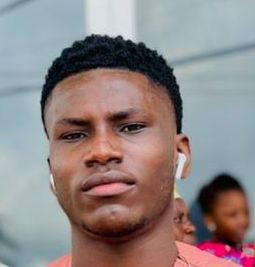

Anorld Valentine Anthony
my name is Anorld Valentine Anthony,i am from south eastern region(Anambra state) i was born in the year 2000 in Niger state,and i am also social kind of person who likes football and good music am also passionate about computers, am from the department of ISMS in the faculty of SICT.
List of my courses
- GST 111 (communication in english)
- GST 112 (nigeria people and culture)
- CMS 112 (writing for the media)
- CMS 111 (Introduction to human communication)
- ISM 111 (introduction to information science)
- ISM 112 (Basic computer tools)
- ISM 113 (computer aided design in media process)
- FUTM-ISM 112 (introduction to media studies)